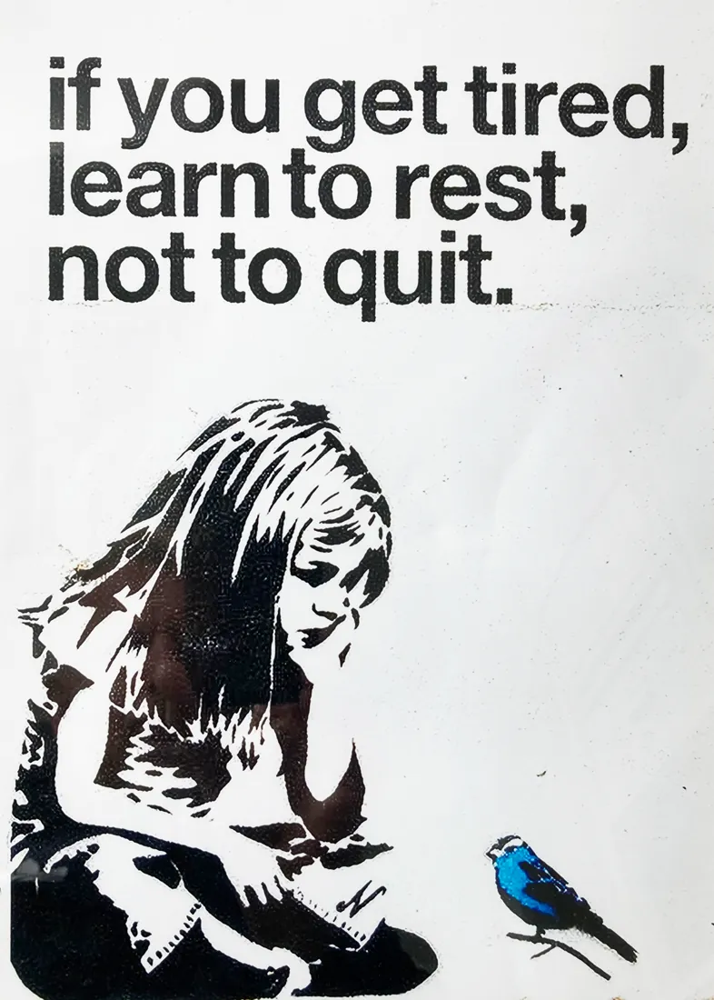

Aktuelles
News & Impulse
Beiträge zu Führung, Veränderung und gesundem Arbeiten.

08.02.2026
actiself: Eine neue Anwendung zur Prävention von Burnout und chronischem Stress - mit Wearables
Mit actiself startet eine neue Anwendung, die Menschen im Alltag mit kurzen, wirksamen Übungen dabei unterstützt, Stress besser zu bewältigen, Schlaf zu verbessern und …
Weiterlesen →
08.02.2026
Have a break! Wie (richtige) Pausen vor dem Ausbrennen schützen
Machen Sie regelmäßig eine Mittagspause, in der Sie nicht am Arbeitsplatz bleiben? Wenn ja, gehören Sie zu einer Minderheit. Immer mehr Menschen nutzen die Pausenzeit …
Weiterlesen →
27.03.2025
Navigation im Nebel: Wie Sie sich auf die Zukunft vorbereiten können, während die ganze Welt auf Sicht fährt
Die Nordsee, irgendwo zwischen Schottland und Dänemark. In einem der ersten gewaltigen Herbststürme kämpft sich ein Tanker nachts durch die aufgewühlte See. Die Wellen …
Weiterlesen →Ihr nächster Schritt
Sprechen wir über Ihr Anliegen.
In einem unverbindlichen Erstgespräch klären wir, wie wir Sie und Ihr Team am besten unterstützen können.